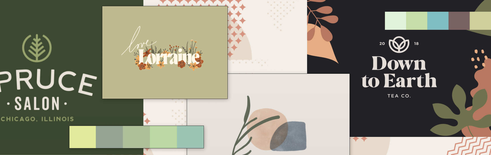

mobile app design 2021 - 1st Place Google Cloud Award @ cmd-f
Why did we make this app?
For the to-be-moms around the world, sometimes knowing what is healthy for their baby isn't always clear. Although some foods and drinks like alcohol are easier to identify as harmful,
there are also more obscure foods like cheese and chips that are less obvious and sometimes harmful in certain amounts.
We thought of the pregnant women that go to get groceries, sometimes unsure about which foods to get. Would this be harmful? Can I eat this much?
We wanted to create an app that could be a helping hand for future moms braving the grocery aisles.
Duration: 1 week
Tools: Figma, Procreate, (lots of) Discord
Team: Sheena Cheng, Michelle Du, Tiantian Li
Role: UI/UX Designer and Front End Developer
The World of To-Be-Moms
Being a mom, and caring for a child for the first time can be difficult and sometimes full of the unknown.
With physical changes and fluctuations in hormones affecting mood and sometimes mental well-being, it can be really difficult to balance
all of these with other life duties.
Around 375 thousand women give birth in Canada alone. During such a precious time in our lives, there are so many things to balance that it can be easy to overlook diet. To add to that, eating harmful foods is not the only thing to-be-moms are worried about.
Moms are also concerned
about weight gain, body-image and being too restricted in diet.
What do pregnant women grapple with when it comes to food?
An Opportunity to Help
Low-Fidelity Prototype
Searching for food
Feedback
The main piece of feedback from my team (since I was working with our developers) was that the "check my food" menu that expands to "search", "upload" and "camera" felt like an extra interaction that wasn't really needed. So we kept this in mind for our next iterations.Uploading photos
Feedback
One of my teammates, Sheena, pointed out that the "upload" and "camera" option together felt redundant, and that there is usually a default camera interface for both of these options. I thought this was a good point, so we decided on one clickable option for uploads/camera.Questions I asked.
High-Fidelity Prototype & Visual Design System
What kind of experience is Food Baby?
I wanted to create a safe space for to-be-moms, that felt easy to use but also warm and welcoming. I first started by creating a stylescape and gathering reference material from Dribbble, Behance and my own stash of references.

To provide a little context, this project was a hackathon project my team and I did for cmd-f 2021. For this hackathon, we were not allowed to bring
in prepared ideas, so we ideated, designed and created this app within 24 hours. After the hackathon, I decided to work on this project more and flesh out the design for my own practice and understanding.
If you're curious about the work we've accomplished within the 24 hours,
check this out!